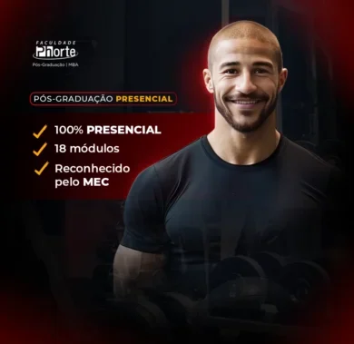
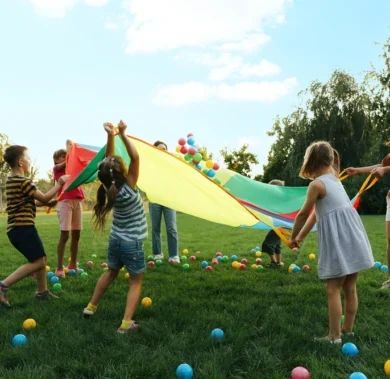
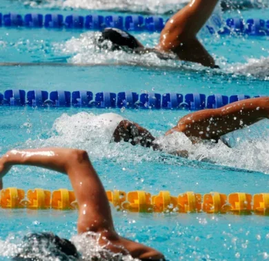
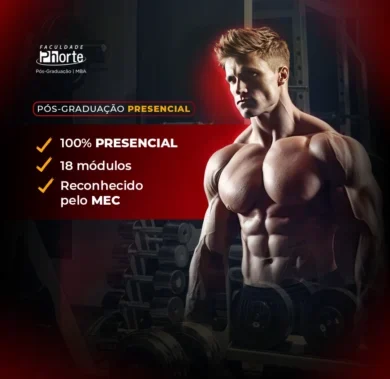
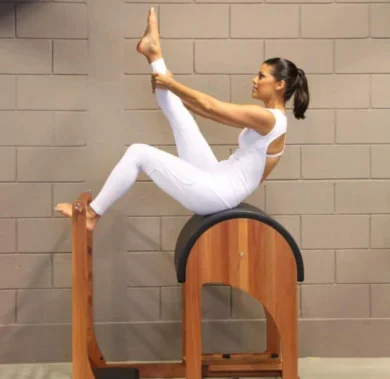
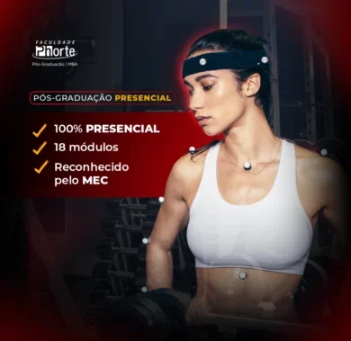
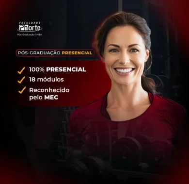
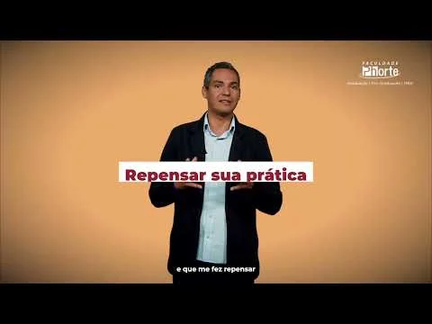
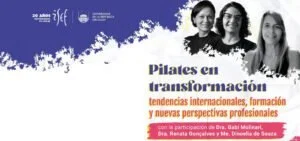

01 / PÓS-GRADUAÇÃO
Medicina Esportiva
Medicina Esportiva: aprimore seu conhecimento e potencialize a performance dos atletas!
Conhecer a formaçãoPÓS-GRADUAÇÃO PHORTE
Encontre uma especialização para o próximo passo da sua carreira.
MAIS PROCURADOS
Conheça alguns dos destaques da Pós Phorte.
Medicina Esportiva: aprimore seu conhecimento e potencialize a performance dos atletas!
Conhecer a formaçãoEducação Infantil com autonomia e respeito: descubra a abordagem Pikleriana!
Conhecer a formaçãoEducação de 0 a 3 anos: os primeiros passos para um desenvolvimento infantil de qualidade!
Conhecer a formaçãoComportamento Humano, Negócios e Imagem
Conhecer a formaçãoEnsine português para o mundo e amplie suas oportunidades globais!
Conhecer a formaçãoEducação Física: transforme paixão por movimento em carreira de sucesso!
Explorar os cursosCONHECIMENTO PARA COLOCAR EM PRÁTICA
Formações desenvolvidas para conectar o que você aprende aos desafios do trabalho, com aplicação das habilidades e competências adquiridas.

Pós-graduaçãoEducação Física

Pós-graduaçãoEducação Física

Pós-graduaçãoEducação Física
Educação Física
Educação Física
Educação Física

Pós-graduaçãoEducação Física

Pós-graduaçãoEducação Física
Educação Física
Educação Física
Educação Física

Pós-graduaçãoEducação Física

Pós-graduaçãoEducação Física
Tradução
Tradução
Tradução
Tradução
Tradução
Tradução
Tradução
Tradução
Tradução
Saúde
Saúde
Saúde
Saúde
Saúde
Saúde
QUEM CONDUZ O CONHECIMENTO
Conheça profissionais à frente das nossas formações.
Pós em Medicina Esportiva
Pós em Medicina Esportiva
Pós em Educação
Pós em Línguas
Pós em Educação
EXPERIÊNCIAS QUE INSPIRAM
Depoimentos de alunos e profissionais que fazem parte da história da Phorte.
Diretora · Educação Infantil numa Perspectiva Pikleriana
Aluna · Educação Infantil numa Perspectiva Pikleriana

Assistir no YouTube (abre em nova aba)Aluno · Educação Infantil numa Perspectiva Pikleriana
Fazer parte da 1ª turma da Pós-Graduação em Educação Física, Escola e Sociedade foi um grande presente, pois tive a oportunidade de tematizar e problematizar temas que são muito caros para a nossa área, além das amizades, dos afetos e das vivências que construí ao longo do percurso.
Ler depoimento completo
A Pós tem professoras e professores incríveis, que trazem a boniteza da Educação Física de forma crítica e reflexiva, e nos permitem esperançar por uma Educação Física Escolar humanizada e transformadora.
Escolhi a Faculdade Phorte pela disponibilidade de um curso de grande interesse... Tem sido tudo de melhor! Estou amando, porque os professores são extremamente sensíveis e é nítido que todo conhecimento em aula atrela a teoria à prática.
Ler depoimento completo
Um exemplo é a aula sobre desenvolvimento lento ou diferente do módulo “brinquedos”, brincadeiras e o brincar, na qual pude trabalhar com a abordagem pikler e ver o desenvolvimento das crianças com deficiência. Todas as aulas nos trazem conteúdos que podemos levar para a unidade escolar, estudar e refletir acerca da teoria. É um curso que nos traz como ser sensível e permite escutar, observar, afetar, marcar, criar memórias e ser história na vida de bebês e crianças na educação brasileira.
Após o curso de Registro e Documentação Pedagógica, muitas coisas foram aprimoradas, por exemplo, a escrita e a observação. Principalmente pela reflexão e contexto dos trabalhos. Notei uma escrita mais reflexiva, como resultado da aplicação dessa prática.
Ler depoimento completo
Eu recomendo o curso!
NOSSA HISTÓRIA CONTINUA COM VOCÊ
+ de 250 milalunos formados
Com mais de 30 anos de experiência, a Phorte reúne uma trajetória de formação e parcerias educacionais. Nossos cursos aproximam conhecimento e prática para acompanhar as demandas profissionais.
Conhecer as pós-graduaçõesREVISTA PHORTE
EDUCAÇÃO E CARREIRA
EDUCAÇÃO E CARREIRA

EDUCAÇÃO E CARREIRA